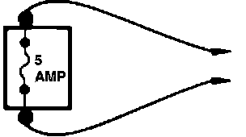

Troubleshooting Tools
Isolating electrical problems requires the use of a voltmeter, an ohmmeter, and sometimes an ammeter. A voltmeter measures voltage at selected points in a circuit. An ohmmeter measures a circuit's resistance to current flow. An ammeter measures the current flow through a circuit.
When using an ohmmeter, disconnect the battery. Battery voltage will cause the ohmmeter to give false resistance readings.
CAUTION: DO NOT use an ohmmeter on solid state or computer related circuits. The voltage that an ohmmeter applies to a circuit could damage these components.
Fused Jumper Wire:

FUSED JUMPER WIRE
A jumper wire is made up from an in-line fuse holder and a set of test leads. The fuse holder should contain a five amp fuse. Use the fused jumper wire for bypassing open circuits. Do NOT use a jumper across high load circuits, such as electric motors.